(30) Fit – cuda0¶
Motivation: Fitting notebook, cuda0
# HIDE CODE
import os, sys
from IPython.display import display
# tmp & extras dir
git_dir = os.path.join(os.environ['HOME'], 'Dropbox/git')
extras_dir = os.path.join(git_dir, 'jb-MTMST/_extras')
fig_base_dir = os.path.join(git_dir, 'jb-MTMST/figs')
tmp_dir = os.path.join(git_dir, 'jb-MTMST/tmp')
# GitHub
sys.path.insert(0, os.path.join(git_dir, '_MTMST'))
from vae.train_vae import TrainerVAE, ConfigTrainVAE
from vae.vae2d import VAE, ConfigVAE
from analysis.opticflow import *
from figures.fighelper import *
# warnings, tqdm, & style
warnings.filterwarnings('ignore', category=DeprecationWarning)
from tqdm.notebook import tqdm
from rich.jupyter import print
%matplotlib inline
set_style()
Trainer¶
vae = VAE(ConfigVAE(
n_kers=4,
n_latent_scales=2, n_groups_per_scale=20, n_latent_per_group=9,
scale_init=False, residual_kl=True, ada_groups=True,
))
tr = TrainerVAE(
model=vae,
cfg=ConfigTrainVAE(
lr=0.002, batch_size=500, epochs=2000, grad_clip=1000,
lambda_anneal=True, lambda_init=1e-7, lambda_norm=1e-4,
kl_beta=0.25, kl_anneal_cycles=1, kl_anneal_portion=0.3, kl_const_portion=1e-4,
scheduler_kws={'T_max': 650.0, 'eta_min': 1e-05},
),
device='cuda:0',
)
vae.cfg.total_latents()
270
vae.print()
vae.scales
+--------------+------------+ | Module Name | Num Params | +--------------+------------+ | VAE | 17.9 Mil | | --- | --- | | stem | 1.1 K | | pre_process | 96.0 K | | enc_tower | 9.4 Mil | | enc0 | 16.6 K | | enc_sampler | 1.8 Mil | | dec_sampler | 1.8 Mil | | expand | 117.2 K | | dec_tower | 4.6 Mil | | post_process | 40.0 K | | out | 578 | +--------------+------------+
[8, 4]
len(vae.all_conv_layers), len(vae.all_log_norm)
(291, 228)
Review train options¶
print(f"{vae.cfg.name()}\n{tr.cfg.name()}")
k-32_z-9x[10,20]_enc(2x2)-dec(2x1)-pre(1x3)-post(1x3) ep2000-b500-lr(0.002)_beta(0.25:1x0.3)_lamb(0.0001)_gr(1000)
Train¶
comment = f"EPE-fixed_{tr.cfg.name()}"
tr.train(comment=comment)
epoch # 2000, avg loss: 2605.457764: 100%|██████████| 2000/2000 [32:56:49<00:00, 59.30s/it]
Eval¶
%%time
val, loss = tr.validate(use_ema=False)
val_ema, loss_ema = tr.validate(use_ema=True)
CPU times: user 33.7 s, sys: 20.2 s, total: 53.9 s
Wall time: 1min 29s
loss_summary = {
k: {
'vae': np.round(v.mean(), 2),
'ema': np.round(loss_ema[k].mean(), 2),
} for k, v in loss.items()
}
print(f"{vae.cfg.name()}\n{tr.cfg.name()}\n\n{loss_summary}\n")
k-32_z-9x[10,20]_enc(2x2)-dec(2x1)-pre(1x3)-post(1x3) ep2000-b500-lr(0.002)_beta(0.25:1x0.3)_lamb(0.0001)_gr(1000) {'epe': {'vae': 4.67, 'ema': 4.66}, 'kl': {'vae': 52.84, 'ema': 46.43}}
for k, v in val.items():
if 'fig' in k:
print(f"{k} (VAE)")
display(v)
print(f"{k} (EMA)")
display(val_ema[k])
print('-' * 70)
fig/sample (VAE)
fig/sample (EMA)
----------------------------------------------------------------------
fig/regression (VAE)
fig/regression (EMA)
----------------------------------------------------------------------
fig/mutual_info (VAE)
fig/mutual_info (EMA)
----------------------------------------------------------------------
val_ema['regr/r2'], val_ema['regr/r2'].mean(), np.diag(val_ema['regr/r']).mean()
(array([0.96127653, 0.95904093, 0.77579522, 0.77503227, 0.78862261,
0.71017752, 0.7508213 , 0.4151603 , 0.69492847, 0.66162775,
0.71374004]),
0.7460202667082014,
0.8597161003561453)
do_zscore = True
if do_zscore:
x = sp_stats.zscore(val_ema['z_vld'])
y = sp_stats.zscore(val_ema['g_vld'])
x_tst = sp_stats.zscore(val_ema['z_tst'])
y_tst = sp_stats.zscore(val_ema['g_tst'])
else:
x = val_ema['z_vld']
y = val_ema['g_vld']
x_tst = val_ema['z_tst']
y_tst = val_ema['g_tst']
lr = sk_linear.LinearRegression().fit(x, y)
r2_out = sk_metric.r2_score(
y_true=y_tst,
y_pred=lr.predict(x_tst),
multioutput='raw_values',
)
r_out = 1 - sp_dist.cdist(
XA=y_tst.T,
XB=lr.predict(x_tst).T,
metric='correlation',
)
r2_out, r2_out.mean(), np.diag(r_out).mean()
(array([0.96079889, 0.95901099, 0.75629839, 0.74387219, 0.76387143,
0.69589639, 0.75146064, 0.40954115, 0.69268031, 0.66284467,
0.70680033]),
0.7366432160645678,
0.8558008759316572)
z = val_ema['z_vld'].copy()
y = val_ema['g_vld'].copy()
z_tst = val_ema['z_tst'].copy()
y_tst = val_ema['g_tst'].copy()
mu, sd = z.mean(), z.std()
z = (z - mu) / sd
z_tst = (z_tst - mu) / sd
lr = sk_linear.LinearRegression().fit(z, y)
r2_out = sk_metric.r2_score(
y_true=y_tst,
y_pred=lr.predict(z_tst),
multioutput='raw_values',
)
r_out = 1 - sp_dist.cdist(
XA=y_tst.T,
XB=lr.predict(z_tst).T,
metric='correlation',
)
r2_out, r2_out.mean(), np.diag(r_out).mean()
(array([0.96127653, 0.95904093, 0.77579522, 0.77503227, 0.78862261,
0.71017752, 0.7508213 , 0.4151603 , 0.69492847, 0.66162775,
0.71374004]),
0.7460202667082014,
0.8597161003561453)
val_ema['regr/r2'].mean(), val_ema['regr/d'].mean(), val_ema['regr/c'].mean()
(0.7460202667082014, 0.22196501, 0.2130135)
from analysis.linear import compute_dci
w = np.abs(lr.coef_)
w *= x.std(0).reshape(1, -1)
w /= y.std(0).reshape(-1, 1)
compute_dci(w)
(0.13095993, 0.6471848)
z = val_ema['z_vld'].copy()
y = val_ema['g_vld'].copy()
z_tst = val_ema['z_tst'].copy()
y_tst = val_ema['g_tst'].copy()
mu, sd = z.mean(), z.std()
z = (z - mu) / sd
z_tst = (z_tst - mu) / sd
df = []
alphas = np.linspace(1e-5, 1e-2, 1000)
for a in tqdm(alphas):
# fit
lasso = sk_linear.Lasso(
alpha=a,
max_iter=1e5,
).fit(z, y)
# eval: i
r2_lasso = sk_metric.r2_score(
y_true=y_tst,
y_pred=lasso.predict(z_tst),
multioutput='raw_values',
)
i = r2_lasso.mean()
# eval: dc
w = np.abs(lasso.coef_)
w *= z.std(0).reshape(1, -1)
w /= y.std(0).reshape(-1, 1)
d, c = compute_dci(w)
df.append({
'alpha': [a],
'd': [d],
'c': [c],
'i': [i],
'avg': [(i + d) / 2],
})
df = pd.DataFrame(merge_dicts(df))
sns.lineplot(data=df, x='alpha', y='i')
sns.lineplot(data=df, x='alpha', y='d')
sns.lineplot(data=df, x='alpha', y='avg')
plt.axvline(0.0014, color='k', ls='--');
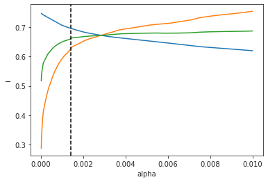
df['i'].max()
0.7464906705747453
# previous fit
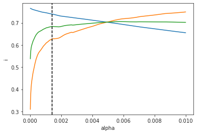
# df['i'].max()
0.7655837298942729
DCI¶
from sklearn import linear_model as sk_linaer
from sklearn import metrics as sk_metric
lr = sk_linaer.LinearRegression().fit(
sp_stats.zscore(val_ema['z_vld']), sp_stats.zscore(val_ema['g_vld']))
r2 = sk_metric.r2_score(
y_true=sp_stats.zscore(val_ema['g_tst']),
y_pred=lr.predict(sp_stats.zscore(val_ema['z_tst'])),
multioutput='raw_values',
)
r2, r2.mean()
(array([0.47257855, 0.41006614, 0.71148849, 0.65121203, 0.67876901,
0.61764076, 0.66847837, 0.46514175, 0.5267347 , 0.49140305,
0.46601709]),
0.5599572663966924)
w = np.abs(lr.coef_)
rho = w.sum(0) / w.sum()
p_disentang = w / w.sum(0, keepdims=True)
p_complete = w / w.sum(1, keepdims=True)
disentang_i = 1 - sp_stats.entropy(p_disentang, axis=0) / np.log(w.shape[0])
complete_mu = 1 - sp_stats.entropy(p_complete, axis=1) / np.log(w.shape[1])
fig, axes = create_figure(2, 1, (13, 1.8), 'all', 'all', constrained_layout=True)
im = axes[0].imshow(p_disentang)
im = axes[1].imshow(p_complete)
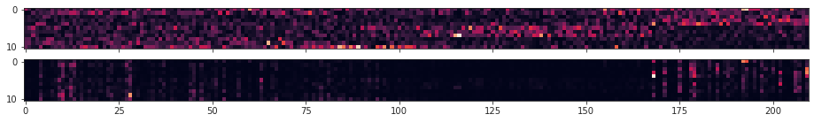
disentang = (disentang_i * rho).sum()
compelte = complete_mu.mean()
disentang, compelte
(0.1707335, 0.20554298)
sns.histplot(disentang_i, bins=np.linspace(0, 1, 101), color='C0', label=r'$D_i$')
sns.histplot(complete_mu, bins=np.linspace(0, 1, 101), color='C1', label=r'$D_i$')
<AxesSubplot:ylabel='Count'>
plt.plot(rho, marker='.')
plt.show()
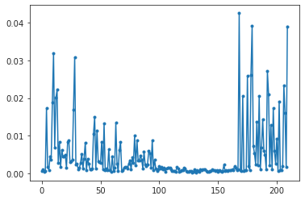
lasso = sk_linaer.Lasso(alpha=0.01, max_iter=1e5).fit(
sp_stats.zscore(val_ema['z_vld']), sp_stats.zscore(val_ema['g_vld']))
r2 = sk_metric.r2_score(
y_true=sp_stats.zscore(val_ema['g_tst']),
y_pred=lasso.predict(sp_stats.zscore(val_ema['z_tst'])),
multioutput='raw_values',
)
r2, r2.mean()
(array([0.40400345, 0.38611246, 0.67665547, 0.61881159, 0.59310771,
0.59439732, 0.64758267, 0.44776296, 0.50305118, 0.46551399,
0.40510704]),
0.5220096227631559)
w = np.abs(lasso.coef_)
rho = w.sum(0) / w.sum()
plt.plot(rho, marker='.')
plt.show()
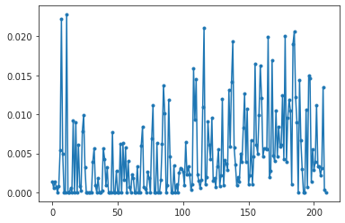
numen = w.sum(0, keepdims=True)
numen[numen == 0] = np.nan
p_disentang = w / numen
numen = w.sum(1, keepdims=True)
numen[numen == 0] = np.nan
p_complete = w / numen
disentang_i = 1 - sp_stats.entropy(p_disentang, axis=0) / np.log(w.shape[0])
complete_mu = 1 - sp_stats.entropy(p_complete, axis=1) / np.log(w.shape[1])
fig, axes = create_figure(2, 1, (13, 1.8), 'all', 'all', constrained_layout=True)
im = axes[0].imshow(p_disentang)
im = axes[1].imshow(p_complete)

disentang = np.nansum(disentang_i * rho)
compelte = np.nanmean(complete_mu)
disentang, compelte
(0.6517226, 0.41041154)
x = sp_stats.zscore(val_ema['z_vld'])
x_tst = sp_stats.zscore(val_ema['z_tst'])
which_g = 0
y = sp_stats.zscore(val_ema['g_vld'])[:, which_g]
y_tst = sp_stats.zscore(val_ema['g_tst'])[:, which_g]
lr = sk_linaer.LinearRegression().fit(x, y)
r2 = sk_metric.r2_score(
y_true=y_tst,
y_pred=lr.predict(x_tst),
multioutput='raw_values',
)
r2, r2.mean()
(array([0.47257846]), 0.47257845940789023)
from sklearn import inspection as sk_inspect
importances = np.zeros((11, 210))
x = sp_stats.zscore(val_ema['z_vld'])
x_tst = sp_stats.zscore(val_ema['z_tst'])
for i in tqdm(range(11)):
y = sp_stats.zscore(val_ema['g_vld'])[:, i]
y_tst = sp_stats.zscore(val_ema['g_tst'])[:, i]
lr = sk_linaer.LinearRegression().fit(x, y)
result = sk_inspect.permutation_importance(
lr, x, y, n_repeats=5, random_state=0)
importances[i] = result.importances_mean
w = np.abs(importances)
rho = w.sum(0) / w.sum()
plt.plot(rho, marker='.')
plt.show()
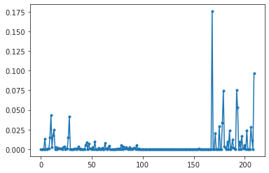
numen = w.sum(0, keepdims=True)
numen[numen == 0] = np.nan
p_disentang = w / numen
numen = w.sum(1, keepdims=True)
numen[numen == 0] = np.nan
p_complete = w / numen
disentang_i = 1 - sp_stats.entropy(p_disentang, axis=0) / np.log(w.shape[0])
complete_mu = 1 - sp_stats.entropy(p_complete, axis=1) / np.log(w.shape[1])
disentang = np.nansum(disentang_i * rho)
compelte = np.nanmean(complete_mu)
disentang, compelte
(0.47556378862811566, 0.46334002992007495)
complete_mu
array([0.55834858, 0.4063492 , 0.5141145 , 0.5341176 , 0.5973893 ,
0.37543179, 0.45205564, 0.36963424, 0.36606959, 0.5479916 ,
0.37523828])
regr = regress(val['z_vld'], val['g_vld'], val['z_tst'], val['g_tst'])
regr_ema = regress(val_ema['z_vld'], val_ema['g_vld'], val_ema['z_tst'], val_ema['g_tst'])
list(regr_ema)
['mi', 'mi_norm', 'mig', 'r', 'r2', 'd', 'c']
regr['r2'].mean() * 100, regr_ema['r2'].mean() * 100
(57.10566690196461, 56.66935406464167)
np.diag(regr['r']).mean(), np.diag(regr_ema['r']).mean()
(0.7530953618826142, 0.7499362089110811)
ent = sp_stats.differential_entropy(val['g_vld'], method='vasicek', axis=0)
ent
array([ 0.48521482, 0.49381382, 0.27086478, 0.27571696, 0.27490406,
0.96252636, 0.96879261, 0.96706354, 0.43790779, 0.4336104 ,
-0.703086 ])
sns.histplot(val['g_vld'][:, 9]);
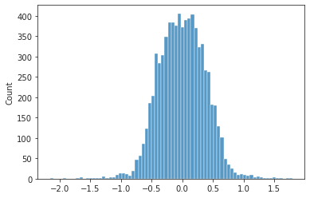
tr.dl_tst.dataset.factor_names
{0: 'fix_x',
1: 'fix_y',
2: 'v_self_x',
3: 'v_self_y',
4: 'v_self_z',
5: 'v_obj_x',
6: 'v_obj_y',
7: 'v_obj_z',
8: 'pos_obj_x',
9: 'pos_obj_y',
10: 'pos_obj_z'}
entropy_discrete(val['g_vld'][:, 9], 20)
0.6872872163742719
1 - 1e-3
0.999
Gradient quantiles¶
a = np.stack(tr.stats['q'])
a.shape
(3028, 4)
fig, axes = create_figure(4, 1, (15, 8), 'all')
for i, ax in enumerate(axes.flat):
ax.plot(a[:, i])
ax.set_yscale('log')
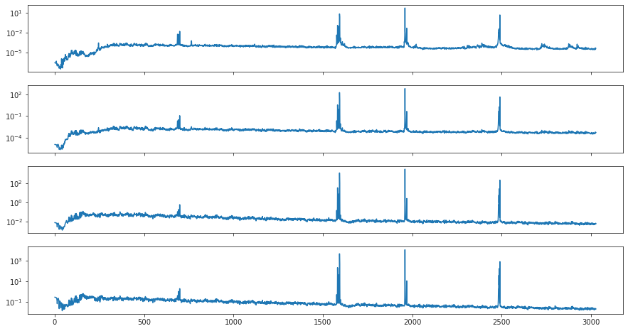
fig, axes = create_figure(4, 1, (15, 8), 'all', 'all')
for i, ax in enumerate(axes.flat):
ax.plot(a[:, i])
# ax.set_yscale('log')
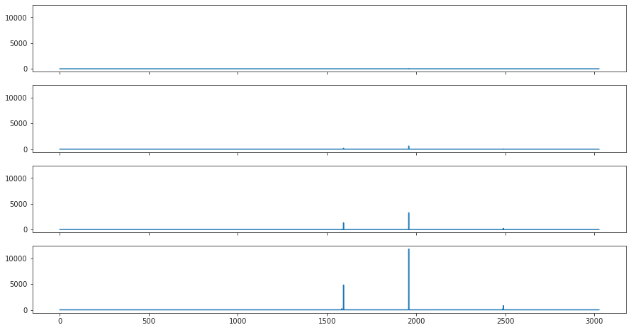
ids = np.argsort(a[:, 3])[::-1]
a[ids][:10]
array([[4.70497303e+01, 6.24381454e+02, 3.25176420e+03, 1.18062537e+04],
[6.09734440e+00, 1.76353558e+02, 1.29898698e+03, 4.81890981e+03],
[4.28144193e+00, 4.32554083e+01, 2.24989483e+02, 8.07263673e+02],
[2.16084993e+00, 1.57247159e+01, 9.92054600e+01, 4.63432818e+02],
[1.19143877e-01, 3.40490681e+00, 3.50532925e+01, 2.12924517e+02],
[3.73780169e-02, 1.79290777e+00, 2.68807427e+01, 1.75726674e+02],
[7.94552900e-02, 8.66108224e-01, 7.59450638e+00, 4.32092611e+01],
[2.84448471e-02, 5.04085064e-01, 5.93678675e+00, 3.94013906e+01],
[3.92370038e-02, 2.42084436e-01, 1.97695330e+00, 1.15657066e+01],
[4.41845823e-02, 4.34113048e-01, 2.57850293e+00, 1.09694010e+01]])
Eval fit (old code)¶
all_norm = [torch.exp(n.ravel()) for n in vae.all_log_norm]
all_norm = to_np(torch.cat(all_norm))
sns.histplot(all_norm, bins=np.linspace(0.5, 1.5, 101));
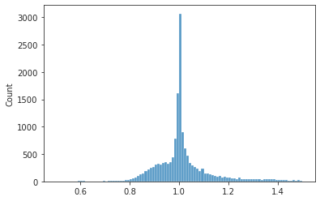
np.max(all_norm), 100 * (all_norm < 0.5).sum() / len(all_norm), 100 * (all_norm > 1.5).sum() / len(all_norm)
(5.9622617, 0.018766420618040784, 3.0401601401226075)
_ = plot_latents_hist(
z=val['z_sample'],
scales=vae.latent_scales()[0],
)
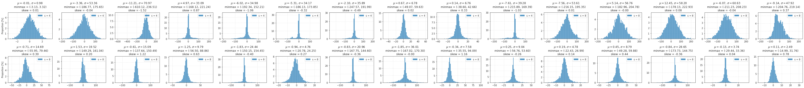
%%time
_ = plot_latents_hist_full(
z=val['z_sample'],
scales=vae.latent_scales()[0],
constrained_layout=False,
tight_layout=True,
)
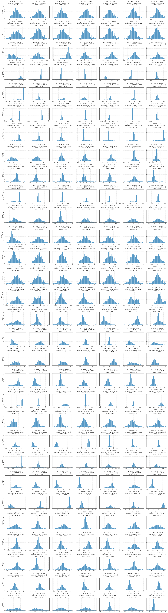
CPU times: user 39.4 s, sys: 1.17 s, total: 40.6 s
Wall time: 40.6 s
names = tr.dl_tst.dataset.factor_names
_tx = [f"({i:02d})" for i in range(len(names))]
_ty = [f"{e} ({i:02d})" for i, e in names.items()]
title = '_'.join(tr.model.cfg.name().split('_')[:2])
mi_max = np.round(np.max(val['regr/mi'], axis=1), 2)
mi_max = ', '.join([str(e) for e in mi_max])
title = f"model = {title}; max MI (row) = {mi_max}"
fig, _ = show_heatmap(
r=val['regr/mi'],
yticklabels=_ty,
title=title,
tick_labelsize_x=10,
tick_labelsize_y=7,
title_fontsize=14,
title_y=1.02,
vmin=0,
vmax=0.65,
cmap='rocket',
linecolor='dimgrey',
cbar=False,
figsize=(20, 5),
annot=False,
display=False,
)
fig
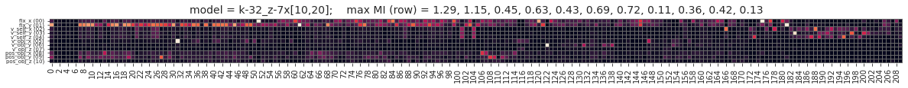
from model.vae2d import *
norms = collections.defaultdict(list)
# norms['stem'] = list(to_np(vae.stem.lognorm.exp()))
for cell in vae.enc_tower:
for m in cell.modules():
if hasattr(m, 'lognorm'):
norms[f"{type(cell).__name__}_enc"].extend(
list(to_np(m.lognorm.exp())))
for cell in vae.dec_tower:
for m in cell.modules():
if hasattr(m, 'lognorm'):
norms[f"{type(cell).__name__}_dec"].extend(
list(to_np(m.lognorm.exp())))
for cell in vae.enc_sampler:
for m in cell.modules():
if hasattr(m, 'lognorm'):
norms['enc_sampler'].extend(
list(to_np(m.lognorm.exp())))
for cell in vae.dec_sampler:
for m in cell.modules():
if hasattr(m, 'lognorm'):
norms['dec_sampler'].extend(
list(to_np(m.lognorm.exp())))
for cell in vae.expand:
for m in cell.modules():
if hasattr(m, 'lognorm'):
norms['expand'].extend(
list(to_np(m.lognorm.exp())))
for cell in vae.pre_process:
for m in cell.modules():
if hasattr(m, 'lognorm'):
norms[f"{type(cell).__name__}_pre"].extend(
list(to_np(m.lognorm.exp())))
for cell in vae.post_process:
for m in cell.modules():
if hasattr(m, 'lognorm'):
norms[f"{type(cell).__name__}_post"].extend(
list(to_np(m.lognorm.exp())))
norms = dict(sorted(norms.items()))
fig, axes = create_figure(2, 4, (13, 4), constrained_layout=True)
for i, (k, v) in enumerate(norms.items()):
ax = axes.flat[i]
ax.axvline(1, color='k', ls='--', lw=1.0, zorder=0)
sns.histplot(v, color=f"C{i}", bins=np.linspace(0, 5, 101), label=f"{k} ({np.mean(v): 0.1f})", ax=ax)
title = f"max: {np.max(v):0.1f}\n{100 * (np.array(v) > 5).sum() / len(v):0.1f} % are > 5"
ax.set_title(title, fontsize=10)
ax.set_ylabel('')
ax.legend()
plt.show()
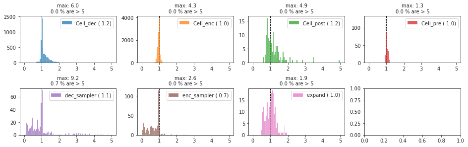
x, norm = next(iter(tr.dl_tst))
y, z, q, p = tr.model(x)
for dist in p:
fig, axes = create_figure(1, 2, (9, 3))
sns.histplot(to_np(dist.mu.squeeze().ravel()), ax=axes[0])
sns.histplot(to_np(dist.sigma.squeeze().ravel()), ax=axes[1])
plt.show()

 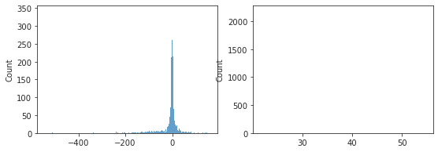
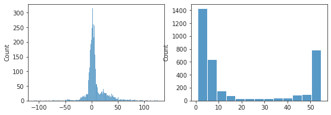
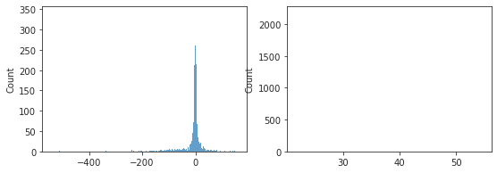
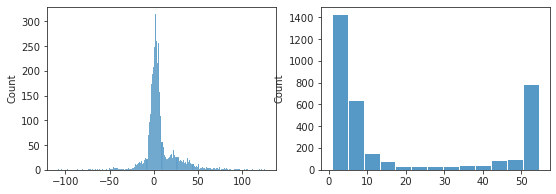


 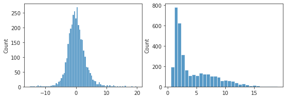
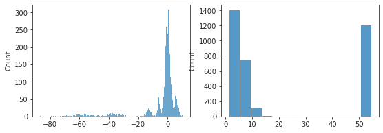
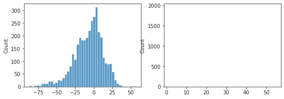
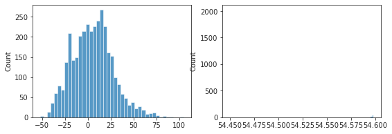
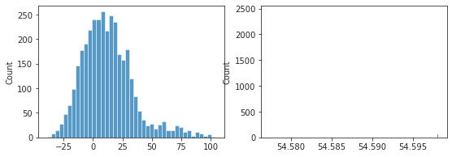
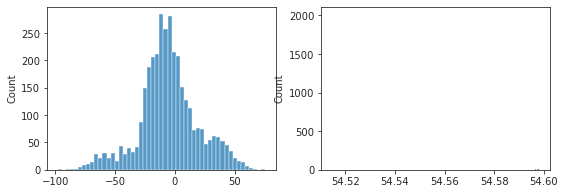
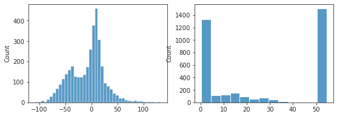
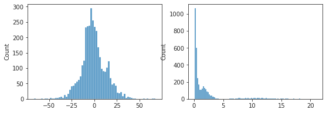
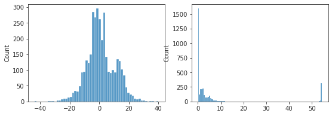
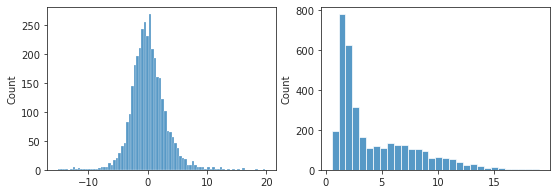
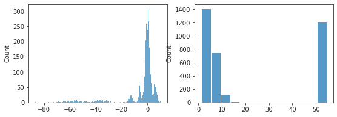
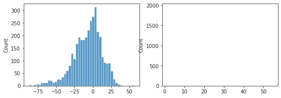
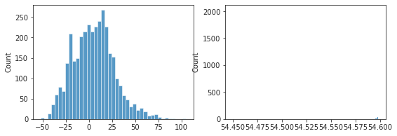
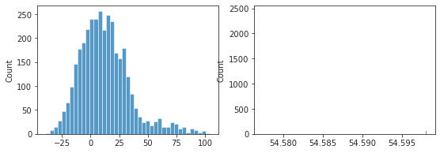
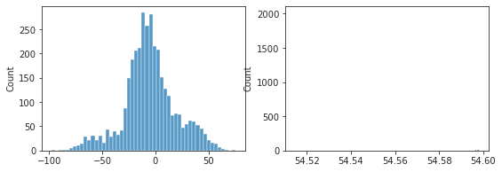
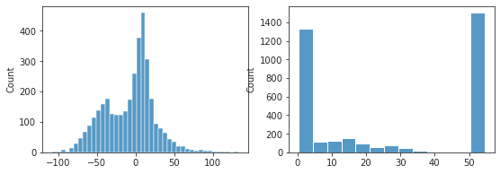
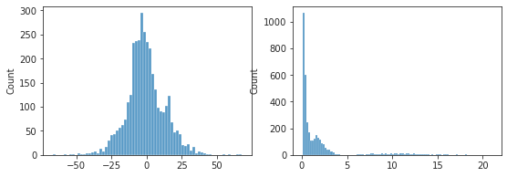
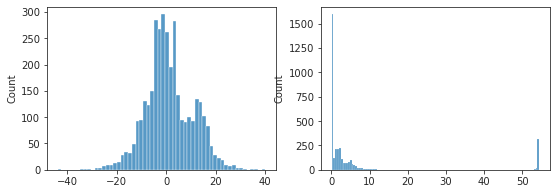
 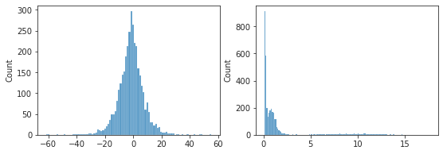
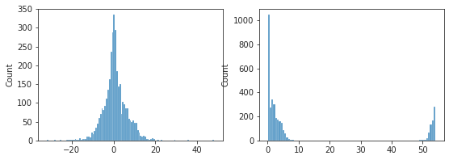
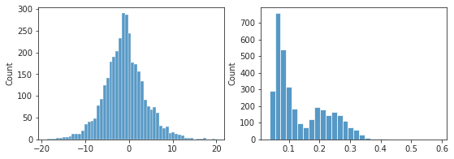
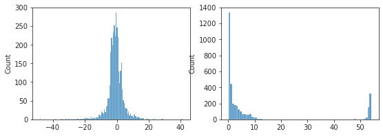
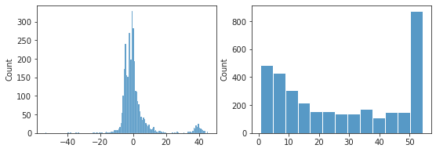
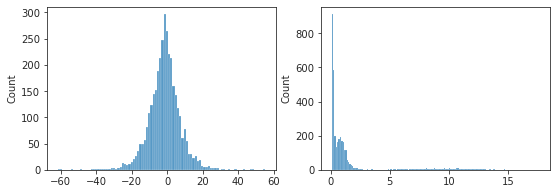
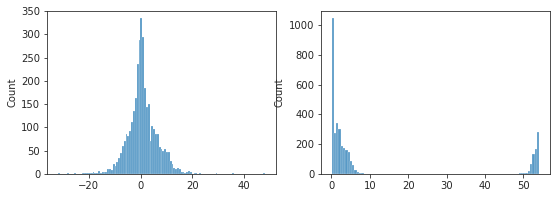
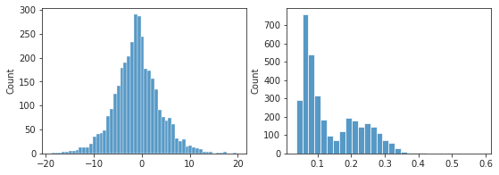
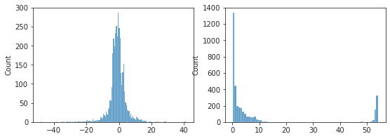
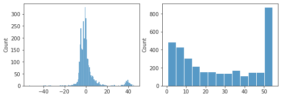

 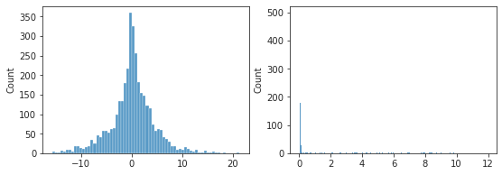
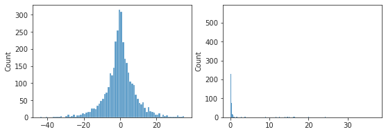
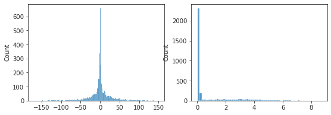
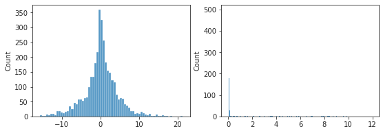
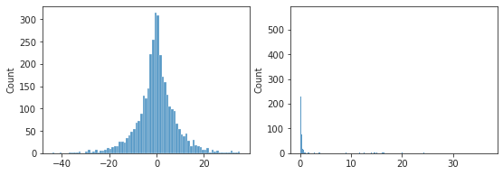
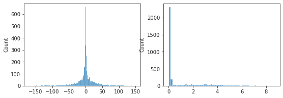